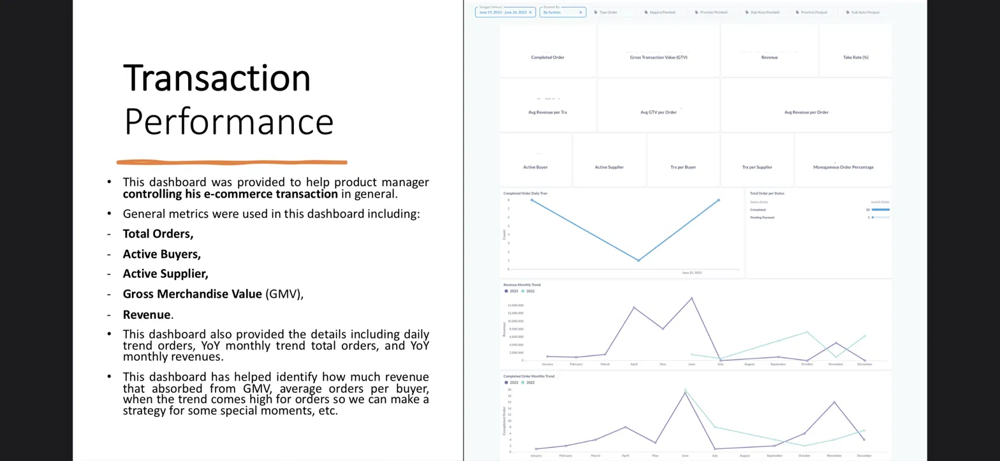
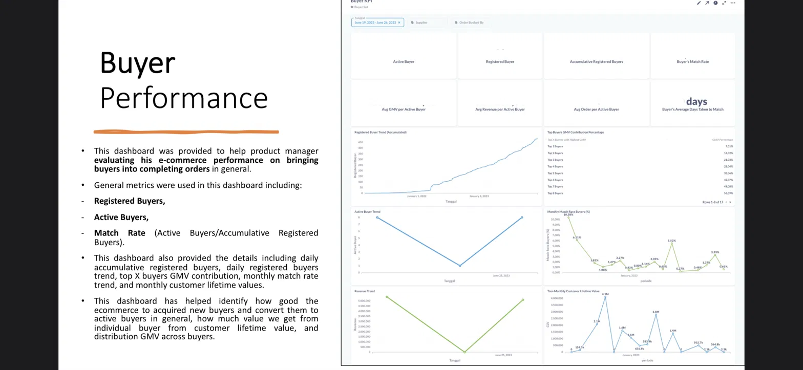
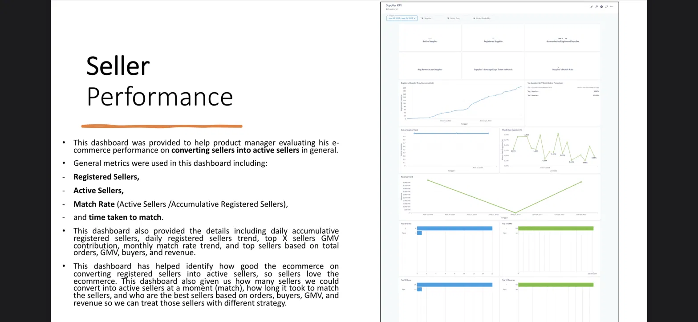
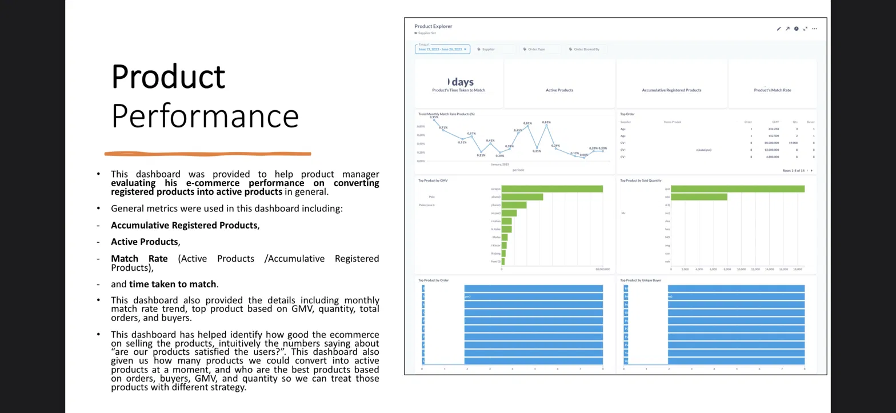
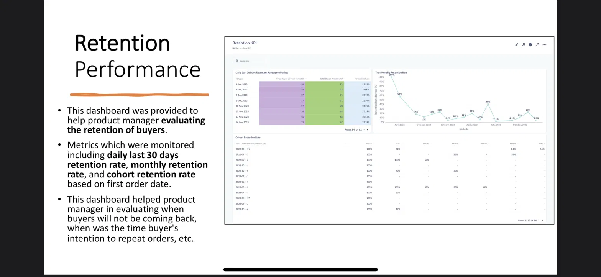
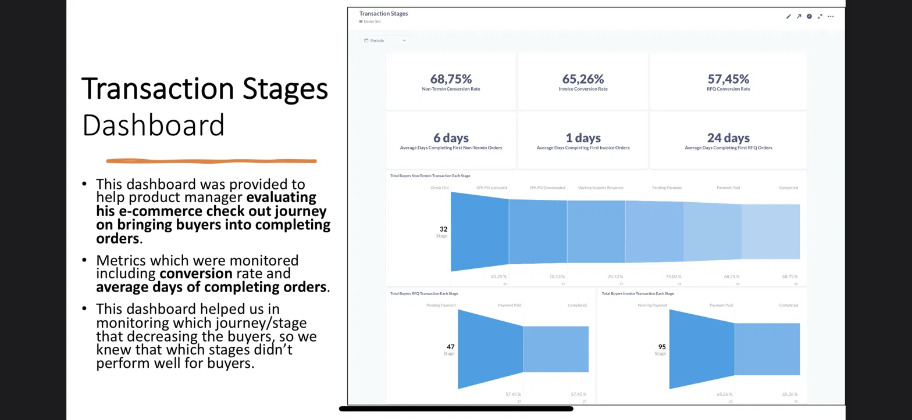

Data Analyst and Analytics Engineer with 4+ years of experience building end-to-end data pipelines, behavioral analytics, and decision-ready dashboards across e-commerce, government, and enterprise environments. I work best at the intersection of engineering and analysis — where clean data meets sharp business questions.
I'm a data professional who operates at the intersection of analytics engineering and business analysis — comfortable writing ETL pipelines in the morning and presenting insights to stakeholders in the afternoon.
My background spans government-scale public health data, agriculture e-commerce platforms, CRM analytics, ISP market intelligence, and palm oil supply chain traceability. Each context demanded a different kind of rigor, and I've developed a habit of going deep into the business before touching the data.
I believe the most valuable data work isn't the most complex — it's the work that people actually trust and use. That means clean pipelines, clear metric definitions, and analysis that answers the question behind the question.
Traceability and Verification Officer — embedded analytics lead for palm oil supply chain data across 500+ mills.
Served across four distinct data functions within Telkom's ecosystem — spanning government-scale public health data, e-commerce analytics engineering, CRM platform analytics, and ISP market intelligence — acting as an embedded analytics lead for each product team.
A full analytics suite built for AgreeMart, Telkom's agriculture B2C e-commerce platform. Dashboards were designed in Metabase and Looker Studio on BigQuery, covering the full commercial lifecycle from registration through retention.

Top-level GMV, revenue, take rate, and daily/monthly order trends — the command center for product managers tracking overall platform health.

Registered vs active buyers, match rate trends, LTV distribution, and top buyer GMV contribution — identifying which buyer cohorts drive the most value.

Seller registration to activation conversion, match rate, and top seller rankings — enabling segmented seller strategy based on GMV and order contribution.

Active product rate, top products by GMV/quantity/orders, and time-to-match — answering which products the market actually wants and how fast they move.

30-day rolling retention, monthly retention trend, and cohort retention table by first order date — tracking when buyers stop returning and where to intervene.

Checkout-to-completion funnel across Non-Termin, RFQ, and Invoice flows — pinpointing which stage loses the most buyers and how long each conversion takes.
Open to data analyst, analytics engineer, and data scientist roles. I'm especially interested in product-led companies where data is treated as infrastructure, not an afterthought.